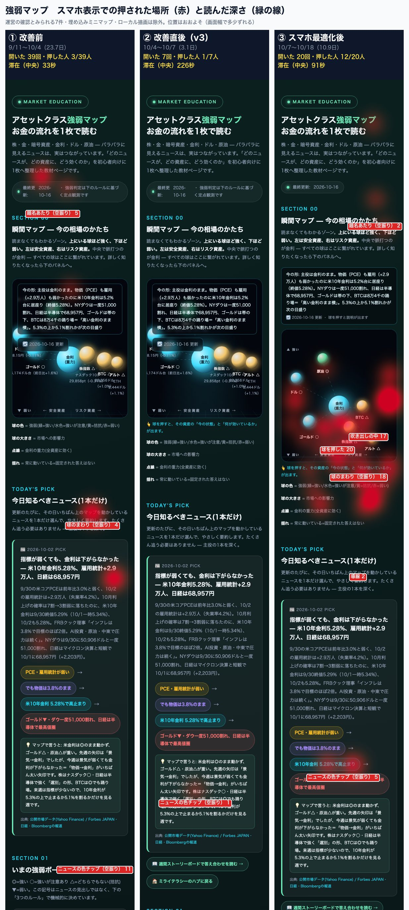
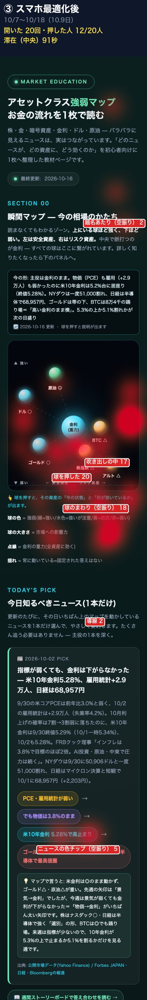
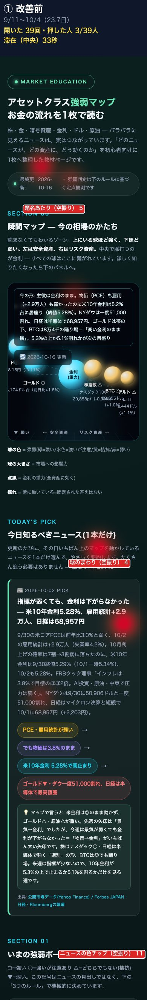
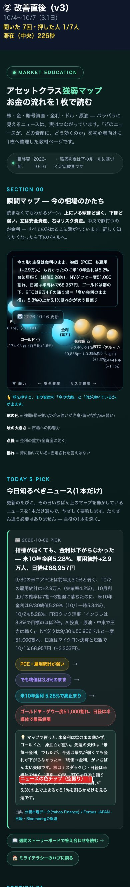
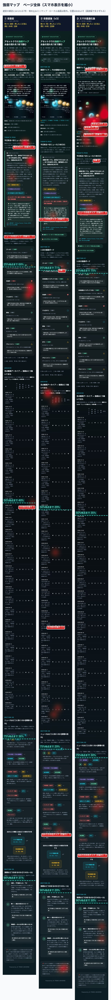

強弱マップ 行動の変化
効いた：球が押されるようになった。何か押した人 3/39人 → 12/20人、滞在（中央）33秒 → 91秒。
まだ：開く回数は横ばい（1日 1.6 → 1.8回）で、今週（10/12〜）は4回に減った。半分まで読む人は 49% → 35%。
空振り：押しても何も起きない所が、まだ押された回数の半分近く（71回中32回）ある。
何か押した人8%→60%改善前→最適化後
滞在（中央）33→91秒改善前→最適化後
1日に開く回数1.6→1.8ほぼ横ばい
押された場所（スマホ表示）

③ スマホ最適化後だけを大きく見る

① 改善前・② 改善直後を大きく見る


ページ全体（どこまで読んだか・緑の線）

数字の比較
| ① 改善前 | ② 改善直後 | ③ 最適化後 | |
|---|---|---|---|
| 期間（日数） | 9/11〜10/4（23.7） | 10/4〜10/7（3.1） | 10/7〜10/18（10.9） |
| 開いた回数 | 39 | 7 | 20 |
| 1日あたり | 1.6 | 2.3 | 1.8 |
| 何か押した人 | 3（8%） | 1（14%） | 12（60%） |
| 押された回数 | 21 | 14 | 71 |
| 滞在（中央） | 33秒 | 226秒 | 91秒 |
| 25%まで読んだ | 69% | 71% | 75% |
| 50%まで | 49% | 29% | 35% |
| 75%まで | 36% | 29% | 30% |
| 90%まで | 31% | 29% | 30% |
| スマホの割合 | 49% | 43% | 70% |
| 平日投稿から来た | 29 | 5 | 19 |
| ミニマップの表示※ | 36 | 6 | 16 |
※ハブとストーリーボードに埋め込んだ小さいマップの表示回数。開いた回数には入れていない。②は7回しかないので、傾向は①と③で見る。
③で押された中身（71回）
- 球：原油5・BTC5・ドル4・アルト3・株指数2・ゴールド1
- 吹き出しの中：閉じる11・強弱ボードへ3・3つのルールへ3
- 空振りの場所：球のまわり18・ニュースの色チップ5・ページ下（伝わり方のチップ〜3つのルール、1人が拡大して押した）7・題名あたり2
- ストーリーボードへの導線は③で0回（②で1回）
週ごとの開いた回数
10/13〜16の平日投稿4本すべてにマップのリンクは入っていた。それでも10/13・14は0回。
端末と来訪回数（③）
- iPhone（Safari）11・Android（Chrome）5・Mac（Chrome）5・Windows（Edge）2
- そのブラウザで初めて7・2回目以上6（記録なし10）
- Macの5回のうち4回は同じ1つのタブ（運営本人の可能性あり）
完全版・ストーリーボードへの流入（go/ 経由）
| 回 | 完全版 full | ストーリーボード sb |
|---|---|---|
| 第26回（9/13） | 5 | — |
| 第27回（9/20） | 2 | 3 |
| 第28回（9/27） | 4 | 0 |
| 第29回（10/4） | 1 | 1 |
| 第30回（10/11） | 2 | 2 |
| 第31回（10/18） | 0 | 0 |
週1〜5回で横ばい、増えていない。第31回は公開から約3時間で m31full・m31sb とも0件（行き先の登録は確認済み）。第30回は公開当日に完全版2件が来ていた。
次に直す2点（OKが出たら実施）
① 空振りを「押せる」に変える
- 球の名前（「BTC △」など）まで押せる範囲を広げる
- ニュース欄と伝わり方の色チップを押したら、その資産の球の吹き出しが開くようにする
空振り32回のうち23回がこの2か所（球のまわり18・ニュースの色チップ5）。押そうとする動きはもうあるので、受け止めるだけで済む。
② 「今日知るべきニュース」を毎週日曜に入れ替える
- 今も 10/2 のニュースが出ている（16日前）。球や「今の形」は10/16に更新されているのに、ここだけ古い
- ミライニュース公開の日曜に、その回の本編ニュースへ差し替える手順を足す
ニュースの下からストーリーボードへの導線は③で0回。中身が古いまま止まっていると、その先の導線も押されない。
数え方
- 除いたもの：check・selftest、ローカル描画、画面幅800の描画、運営の確認とみられる7回（10/4 16:45 公開直後のMac、10/7 17:43〜49 の連続来訪）、埋め込みミニマップ
- 前回（10/4・10/7）の「閲覧59・79」はミニマップの表示を含んでいた。今回は外したので、数字は前回より小さく出る
- 「開いた回数」はセッション数で、人数ではない。位置はおおよそ（画面幅で多少ずれる）
- データ：行動計測DB（track-mirai）を直接集計